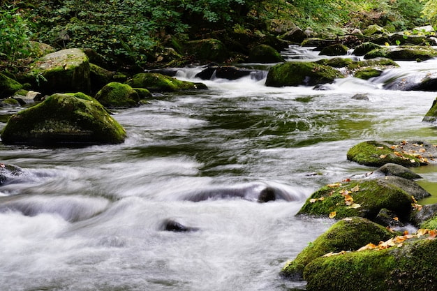
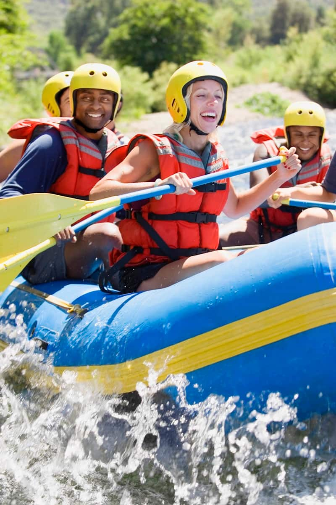
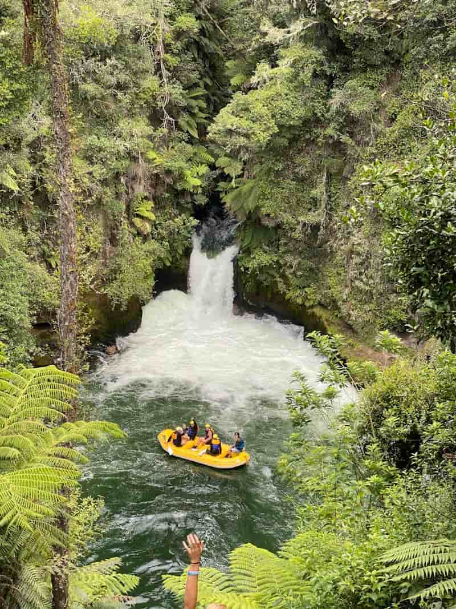
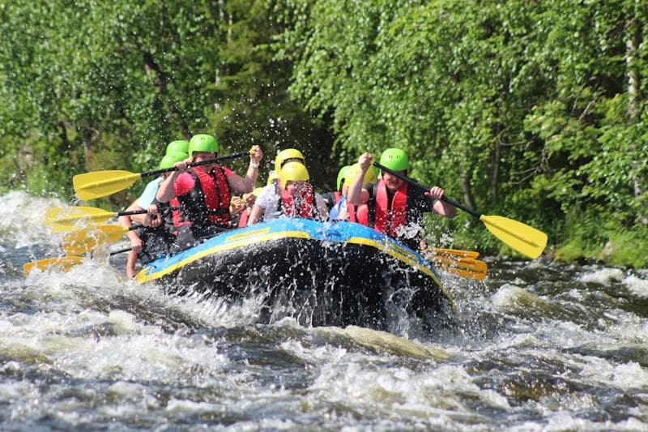
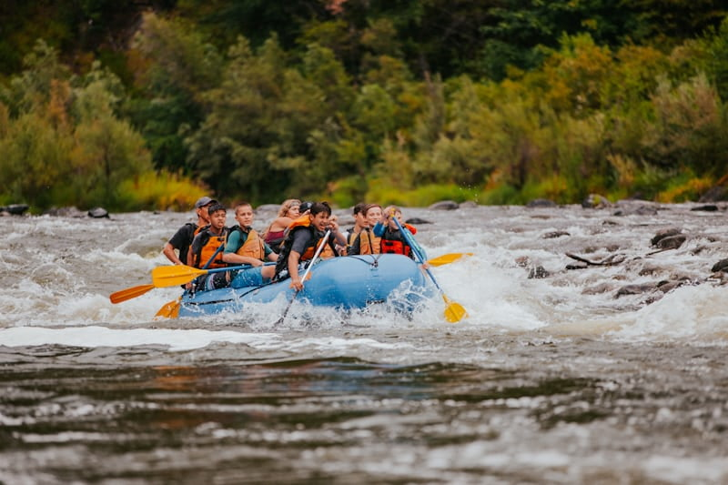
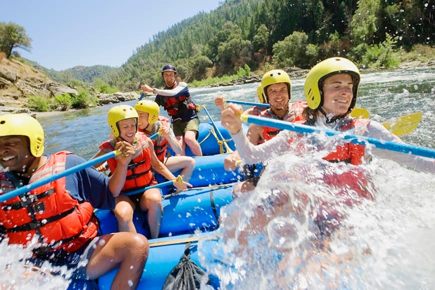

"Ride the Rapids, Embrace the Adventure". At rapid rafters we believe that adventure fuels the soul, and every journey down the river is a story of courage teamwork and discovery. Our mission is to create unforgettable rafting experiences that connents people with nature, challenge thier limits and inspire a lfelong love for the outdoors. Committed to the highest standards of safety professionalism, and environmental stewardship, we ensure that every adventure is both thriling and secure. Through expert guidance and sustainable practices, we make white water rafting accessible to all, from beginners to adrenaline seekers. Our purpose is to empower educate and excite. Bringing people together through adventure while fostering a deep respect for the rivers we ride. Whether you are looking for a heart pounding or thrilling escape, Rapid Rafters is here to make every rafting trip an experience of a lifetime.


RAPID RAFTERS WHITE WATER RAFTING
History
Founded in 2010, Rapid Rafters started with a simple vision: to bring the joy of whitewater rafting to adventurers of all levels. Over the years, we have expanded our routes and built a team of expert guides dedicated to safety and exictement
Adventure Awaits You
Colorado River

Noce River
Ganges River
Zambezi River
Lagos River
